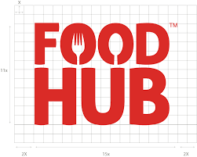

I am a passionate and detail-oriented Data and Business Analyst student with a strong foundation in data analysis, business intelligence, and problem-solving. I have experience working with data visualization, statistical analysis, and business strategy, using tools like Excel, SQL, Python, and Power BI to derive meaningful insights.
My goal is to bridge the gap between data and decision-making by transforming complex datasets into actionable strategies that drive business growth. With a keen eye for trends and a data-driven mindset, I thrive in analytical challenges, optimizing business processes, and improving efficiency.
Currently, I am sharpening my skills in data modeling, predictive analytics, and market research, eager to apply my knowledge in real-world scenarios. I am always open to networking, collaborating on projects, and exploring opportunities in data and business analysis.
Let’s connect and discuss how data can empower better business decisions!.


This project explores COVID-19 data using SQL, analyzing global trends, case growth, vaccination rates, and mortality rates. The objective is to uncover meaningful insights from the dataset to understand the pandemic’s impact across different regions.

This project focuses on applying time series forecasting techniques to predict the quarterly revenue generation of State and Local Government Tax in the U.S. using data from 2009 to 2022. Multiple models are evaluated to determine the best forecasting method.

This project focuses on recognizing yoga poses from video data using deep learning techniques. The aim is to provide accurate pose predictions and offer real-time feedback for pose correction, enhancing the overall yoga experience. By leveraging computer vision and machine learning, the system detects poses, calculates angles, and offers actionable insights.

This project dives into the real estate trends in Alameda County, focusing on factors like property types, pricing trends, and neighborhood clusters. Using data scraped from the MLS (Multiple Listing Service), we conducted comprehensive data analysis and modeling to uncover insights and predict housing prices.
This project presents an analytical study of EdX, a prominent MOOC (Massive Open Online Course) provider, focusing on learner engagement and course performance for the academic year 2012-2013. The goal is to provide data-driven insights to assist directors in making informed decisions for the upcoming academic year.
Renewind is a machine learning project focused on predicting wind turbine failures to minimize maintenance costs. Using sensor data, various classification models were built and optimized, with XGBoost emerging as the best performer. A pipeline was implemented to streamline the prediction process.

This project analyzes Airbnb data to help hosts set competitive prices using predictive modeling and data-driven insights.

FoodHub is a food aggregator platform that connects users with multiple restaurants and various cuisines through a single mobile app. This project analyzes FoodHub’s data to assess its business viability and optimize key aspects such as order trends, delivery times, and customer satisfaction.